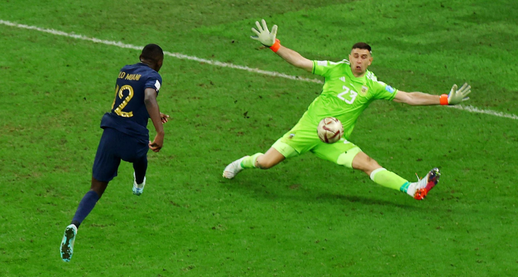
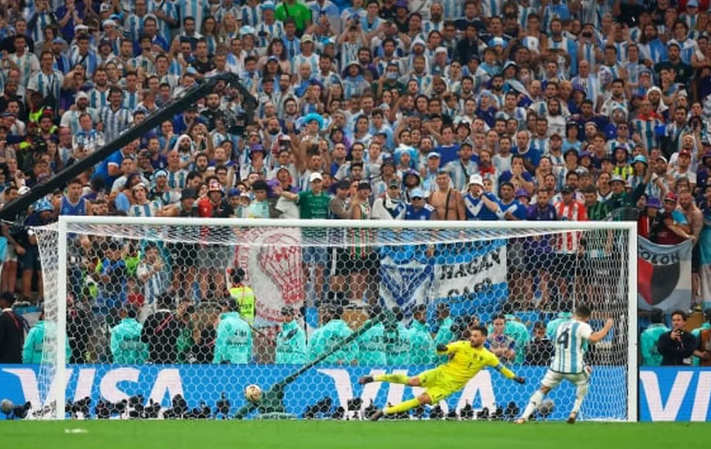

La Albiceleste de Lionel Messi consiguió la gloria máxima tras el triunfo por penales ante Francia en el Lusail Stadium, luego de igualar 3-3 en los 120 minutos. Jugó un enorme partido hasta el descuento de Mbappé y no mereció sufrir. El haberse impuesto en la mejor final de la historia no hizo más que inyectarle épica a una conquista trabajada, sufrida, pero cargada de mística... Y muy buen fútbol. Se trata de la tercera estrella para la Selección y la primera en el torneo para el astro rosarino que, a los 35 años, logró su gran sueño, como Maradona en 1986
Las mejores imagenes de la final


Suscríbete para estar al dia
Recibe las últimas noticias y actualizaciones directamente en tu bandeja de entrada.